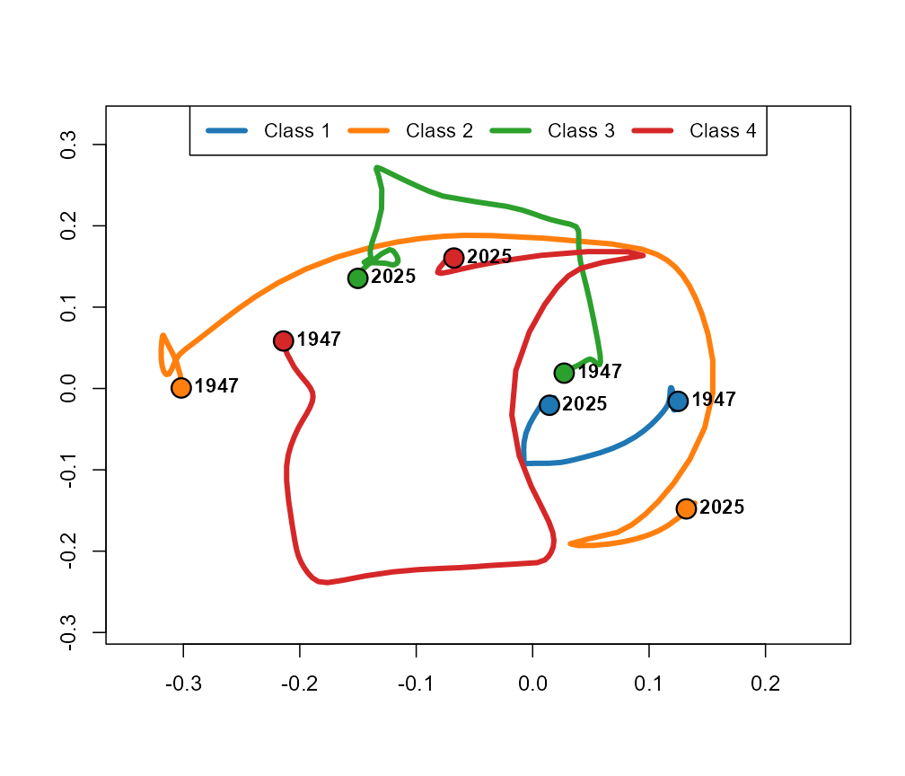
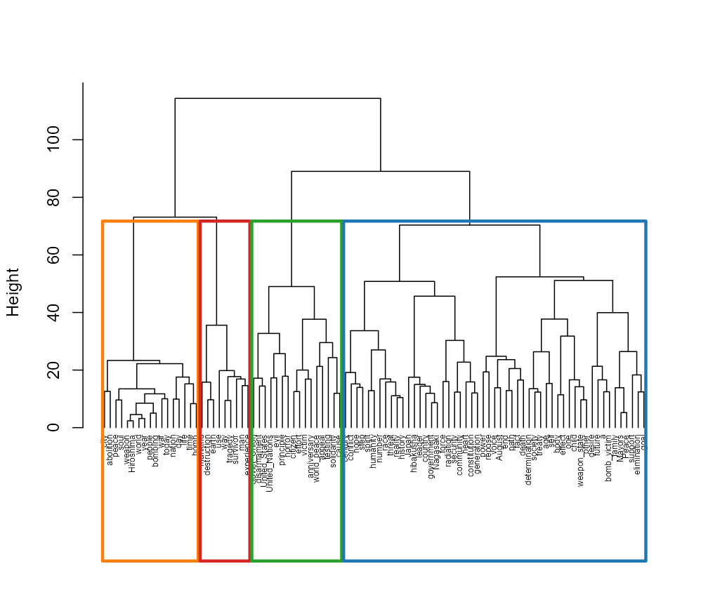
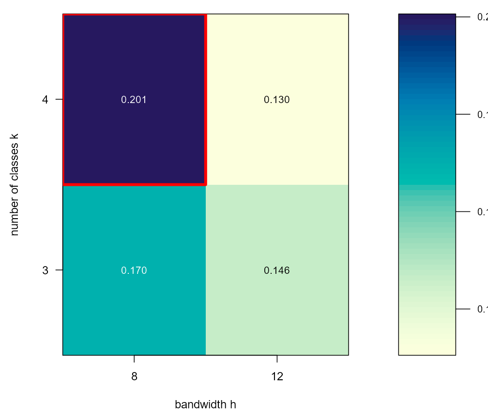
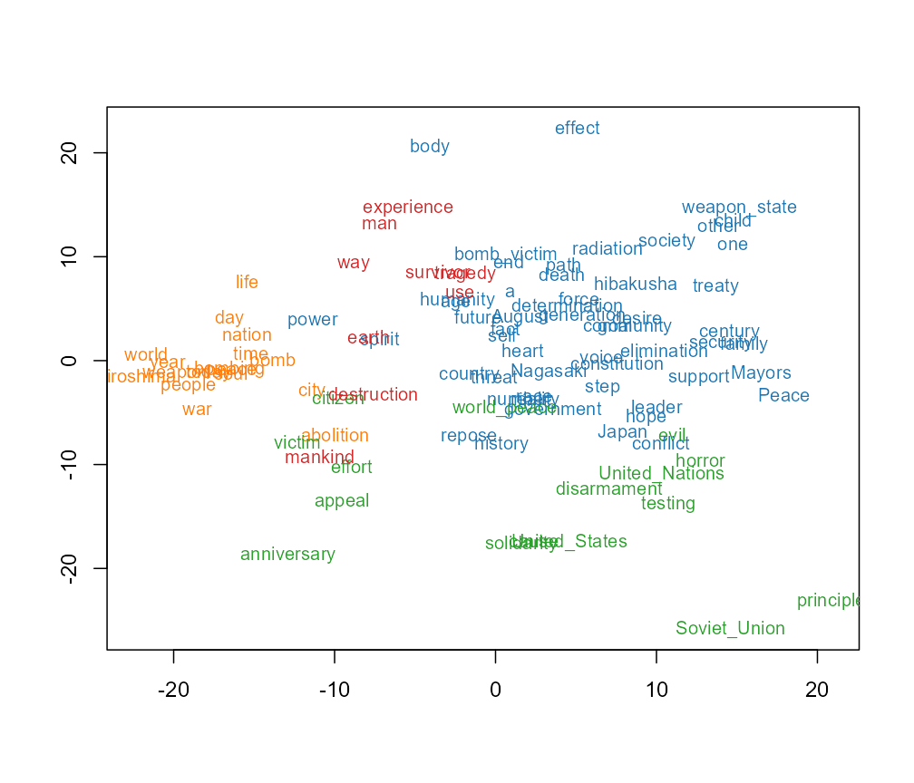
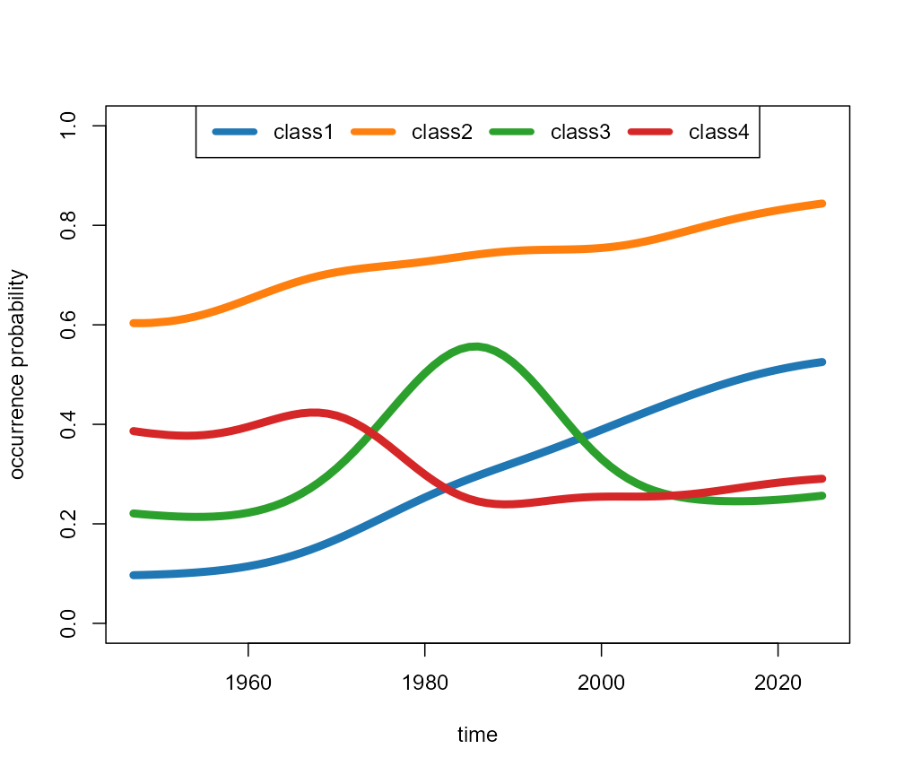
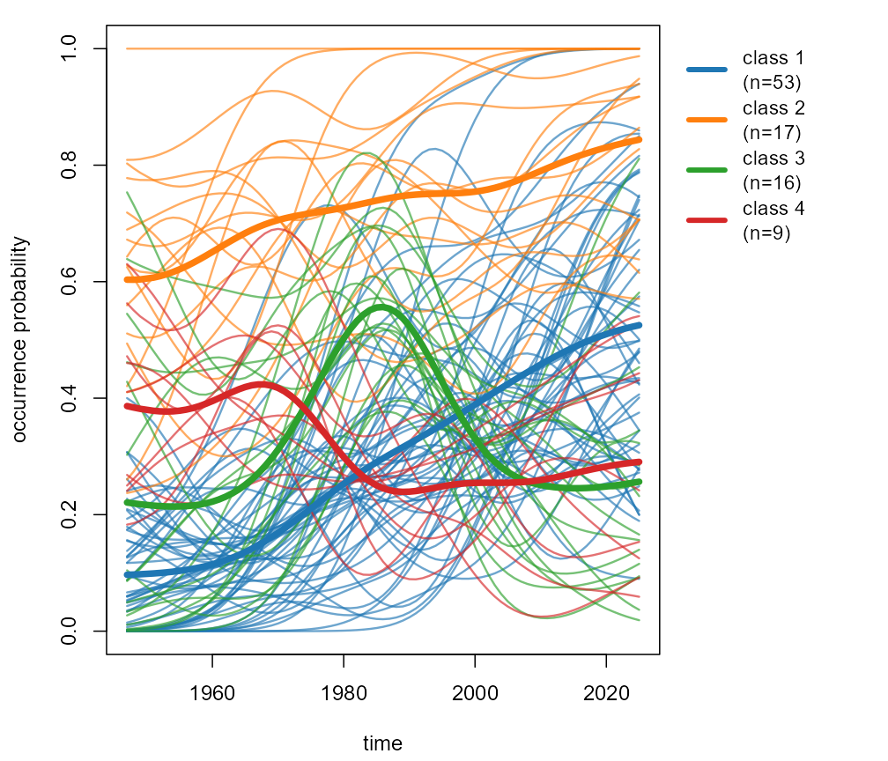
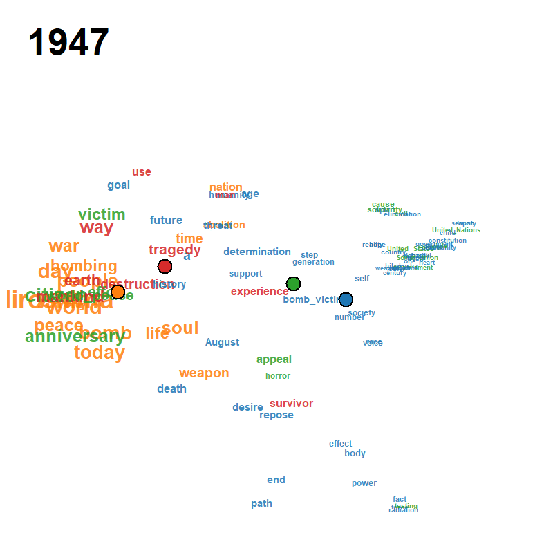

Quick start: Peace Declaration of Hiroshima
Source:vignettes/quickstart-peace.Rmd
quickstart-peace.RmdThis vignette reproduces the figures used in Section 5 of the companion paper, applied to the Peace Declaration of Hiroshima 1947–2025 (the 1950 declaration was not delivered).
1. Load the corpus from CSV
d <- ljmds.read.csv("peace_declaration")
dim(d$X) # 78 x 95
#> [1] 78 95
range(d$t) # 1947 2025
#> [1] 1947 2025
head(d$keywords, 10)
#> [1] "weapon" "Hiroshima" "world" "peace" "people" "year"
#> [7] "war" "hibakusha" "bombing" "city"2. Joint (h, k) selection
A minimal grid is used here so the vignette builds quickly; a finer
grid is recommended in practice (e.g.,
h.grid = c(3, 4, 5, 6, 8, 10, 12, 15, 20)). The trivial
k = 2 split is excluded by leaving 2 out of
k.grid.
sel <- ljmds.select(d$X, d$t,
h.grid = c(8, 12),
k.grid = 3:4)
sel$h.hat
#> [1] 8
sel$k.hat
#> [1] 4
sel$S.hat
#> [1] 0.2006104
round(sel$S, 3)
#> k3 k4
#> h8 0.170 0.201
#> h12 0.146 0.1303. Run the pipeline at
fit <- ljmds.pipeline(d$X, d$t, h = 8, k = 4)4. Figures from the paper
plot(fit, type = "trajectory")
Cluster centroid trajectories.
plot(fit, type = "dendrogram")
Ward dendrogram on H.
plot(sel)
Silhouette heatmap with maximizer marker.
plot(fit, type = "cmd")
Time-collapsed MDS map.
plot(fit, type = "means")
Class mean occurrence curves.
plot(fit, type = "panels")
Per-class smoothed curves.
A pre-rendered animation ships with the package; locate it with
system.file() and view it directly:
gif_path <- system.file("extdata", "peace_declaration.gif",
package = "ljmds")
gif_path
#> [1] "C:/Users/ksato/AppData/Local/Temp/RtmpOeJTLU/temp_libpath115442fc12dc/ljmds/extdata/peace_declaration.gif"
browseURL(gif_path) # open in default browser
# magick::image_read(gif_path) # or: open in RStudio Viewer
To regenerate the GIF from the fitted object (writes a new file to the current working directory; takes about two minutes), uncomment and run:
# gif <- ljmds.animate(fit, file = "peace_declaration.gif",
# trail = 10, fps = 2)